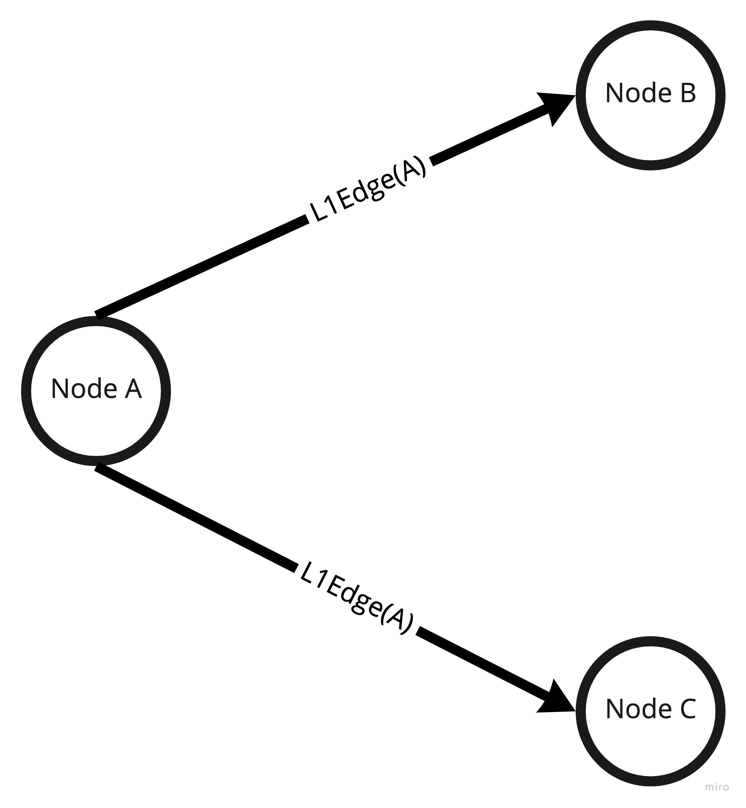
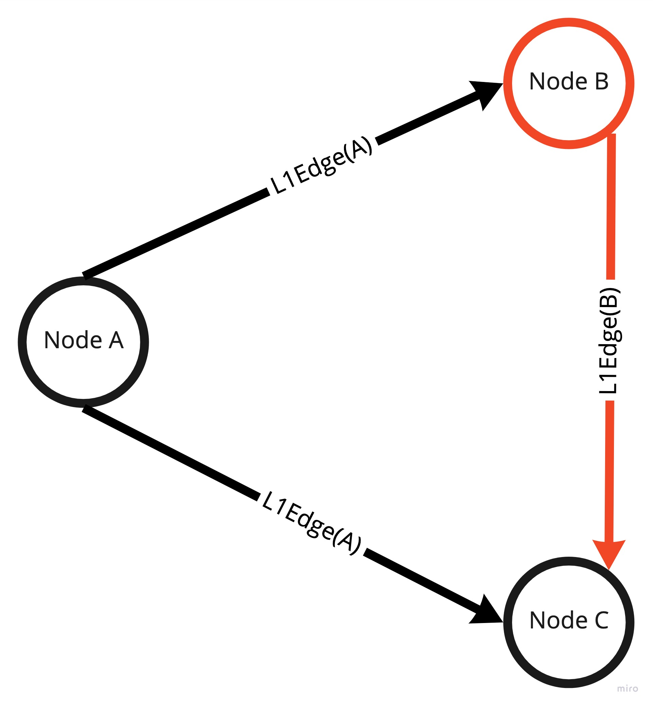
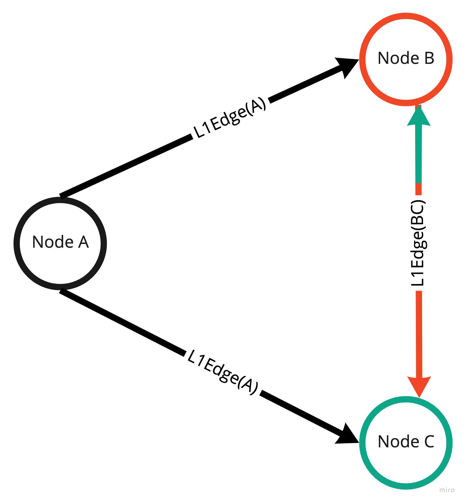
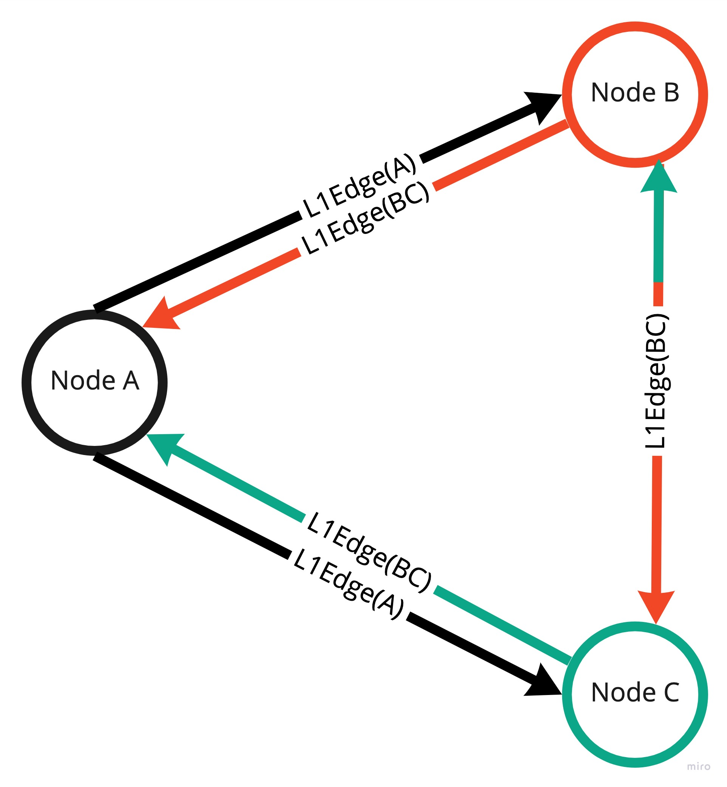
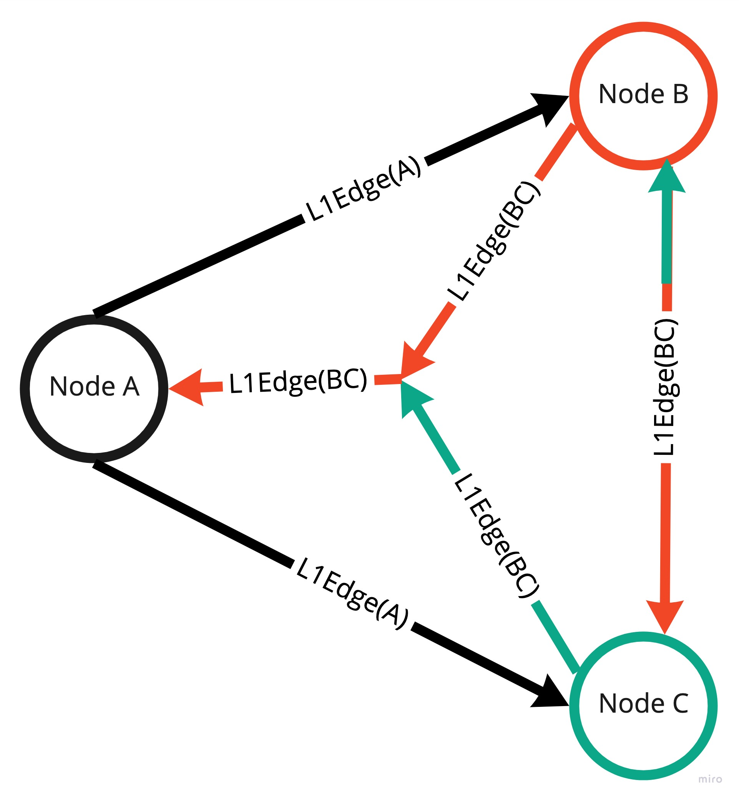
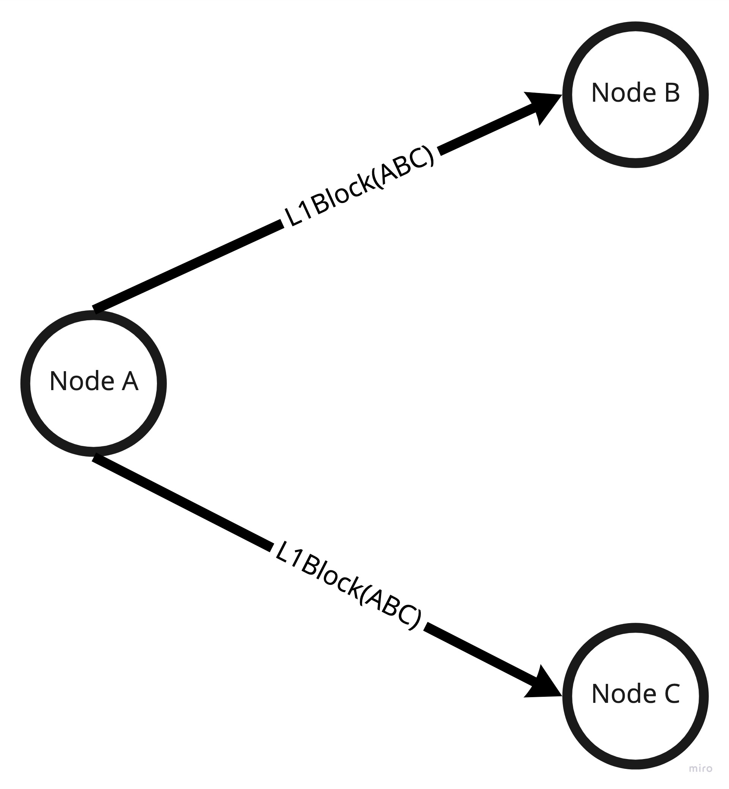

L1 Protocol
Concept explanation
L1 is the inner layer of the L0 protocol. The main purpose of that part is to form a tetrahedron of edges during consensus process and produce a block which is then consumed by the L0 layer.
Base input for L1 protocol is an L1Edge formed from a set of L1Transaction (L1Edges are created continuously over time
as the process is implemented as Pipe[IO, L1Transaction, L1Edge).
The consensus owner selects 2 facilitators and forms L1Edge(A) with each facilitator. L1Edge(A) stands for L1Edge which
contains all transactions proposed by Node A. By forming L1Edge Node A sends proposals
and forces Node B and Node C to participate in consensus round.

Depending on which edge is formed faster either Node B or Node C starts forming a triangle (first dimension of a tetrahedron).
Let's assume that L1Edge from Node A to Node B was formed first. In that case Node B is forced to create another L1Edge(B)
with Node C. It also means that Node B proposes transactions to Node C.

In the meantime edge formed from Node A to Node C forced Node C to ask Node B for proposal which means that Node B and Node C need to exchange proposals between each other bidirectionally. Such structure starts forming the second dimension of a tetrahedron. The whole process is asynchronous so forming edges to Node B and Node C happens in parallel.

Once Node B and Node C exchanged the proposals then these nodes need to send accumulated proposals back to the consensus
owner (Node A). That being said both facilitators form L1Edge back to Node A which forms a complete structure of 2 triangles.

The role of Node A is to validate if L1Edge from Node B and Node C contains the same transactions inside. If so then
the consensus owner can confirm that facilitators exchanged proposals properly. That being said both L1Edges are equal, so it forms a single edge back from facilitators and forms a tetrahedron.

The last step is to create a block by the consensus owner and send it to facilitators and other nodes in the network.

Implementation explanation
The L1 protocol is based on the concept of recursive structures and droste library or to be more specific on
hylomorphism.
All the steps needed to perform a consensus are implemented via CoalgebraM[StateM, L1ConsensusF, Ω]. Each step is a unique type
of recursive scheme so the whole process is just a recursive structure of steps which is then executed by folding the structure
via AlgebraM[StateM, L1ConsensusF, Either[CellError, Ω]] .Coalgebra and Algebra are needed to execute a hylomorphism scheme.hyloM(L1ConsensusStep.algebra, L1ConsensusStep.coalgebra).
Technically speaking hylomorphism is just a catamorphism after anamorphism. That being said anamorphic part creates (unfolds) the structure
and catamorphic part runs (folds) that structure to create a block. By traversing over the structure of steps it executes the steps and folds
to either L1Block or CellError in case of failure.